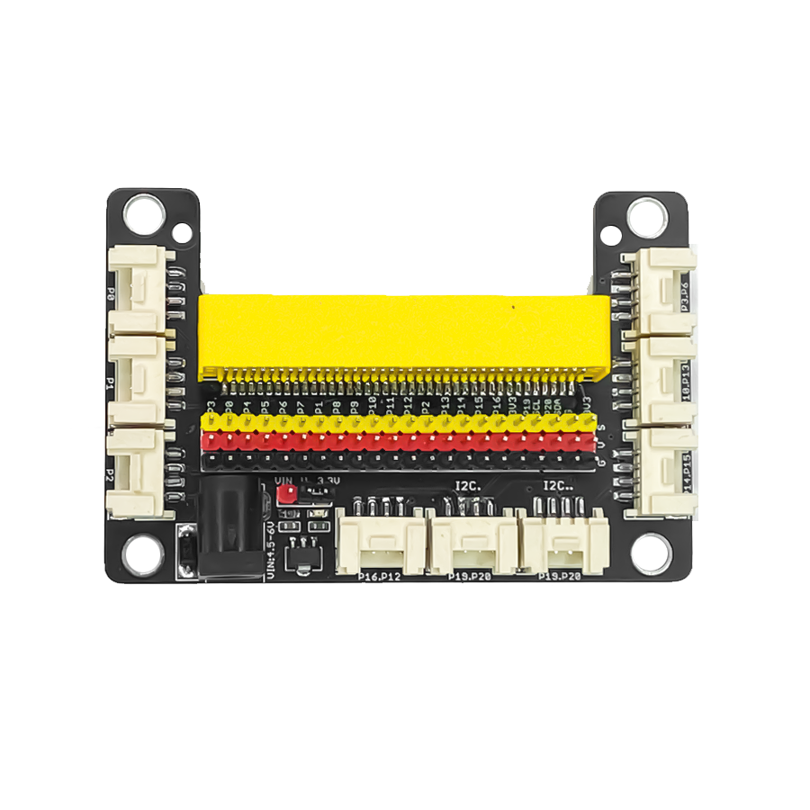

14. Cảm biến âm thanh

Dựa trên micrô, cảm biến âm thanh có thể được sử dụng để phát hiện cường độ âm thanh xung quanh. Thành phần chính của module này là bộ khuếch đại công suất thấp LM358. Cảm biến này có thể được sử dụng để xây dựng một số dự án tương tác như: công tắc điều khiển bằng giọng nói, cảnh báo tiếng ồn,…
1. Mua sản phẩm

2. Thông số kỹ thuật
Thông số kỹ thuật
Điện áp hoạt động: 3.3V
Độ nhạy microphone (1 Khz): 50-54dB
Nội trở microphone: 2.2 KΩ
Tần số của microphone : 16-20 KHz
Dạng tín hiệu: ngõ ra analog
Dòng điện tối đa: 0.5mA
IC khuếch đại công suất: LM358
Kích thước module: 48mm x 24mm x 18mm (DxRxC)
Pinout của cảm biến
Cảm biến âm thanh có 4 chân, và mỗi chân có chức năng như sau:
STT |
Chân |
Chức năng |
|---|---|---|
1 |
GND |
Nối đất |
2 |
VCC |
Cấp nguồn (3.3V) |
3 |
NC |
Không sử dụng |
4 |
SIG |
Tín hiệu ngõ ra của cảm biến |
3. Kết nối
Bước 1: Chuẩn bị các thiết bị như sau:

|
 |
|
|---|---|---|
Máy tính lập trình Yolo:Bit |
Mạch mở rộng cho Yolo:Bit |
Cảm biến âm thanh (kèm dây Grove) |
{kind=link}
Bước 2: Cắm Yolo:Bit vào mạch mở rộng
Bước 3: Sử dụng dây Grove cắm vào cảm biến
Bước 4: Kết nối cảm biến với P0 trên mạch mở rộng.

Bạn có thể kết nối cảm biến âm thanh với chân P0, P1 hoặc P2 trên mạch mở rộng, vì giá trị trả về của cảm biến có giá trị là analog.
4. Hướng dẫn lập trình với OhStem App
Bước 1: Để làm việc với cảm biến âm thanh, bạn cần tải thư viện City:Bit, xem hướng dẫn tải thư viện tại đây.
Bước 2: Gửi chương trình sau xuống Yolo:Bit
{kind=link}
{kind=link}
{kind=link}
Note
Giải thích chương trình:
Chương trình sẽ hiển thị tiếng ồn xung quanh bạn lên cửa sổ Serial, nếu mức độ âm thanh trên 20%, sẽ có âm thanh cảnh báo được phát ra.
Hãy thử thay đổi mức độ cảnh báo âm thanh và “vỗ tay” để chương trình của bạn thú vị hơn nhé!
5. Hướng dẫn lập trình Arduino
Mở phần mềm Arduino IDE. Xem hướng dẫn lập trình với Arduino tại đây.
Copy đoạn code sau, click vào nút
Verifyđể kiểm tra lỗi chương trình. Sau khi biên dịch không báo lỗi, bạn có thể nạp đoạn code vào board.
#include "YoloBit.h"
Yolobit yolobit;
int sensorPin=P0;
bool booleanVal = false;
void setup() {
pinMode(SENSOR_PIN, INPUT);
Serial.begin(9600);
}
void loop() {
booleanVal = digitalRead(SENSOR_PIN);
Serial.println(booleanVal);
if (booleanVal == HIGH) {
Serial.println("Phat hien am thanh");
}
else {
Serial.println("Khong co am thanh");
}
}
Note
Giải thích chương trình: Sau khi nạp chương trình và mở cửa sổ Serial, bạn sẽ thấy giá trị đọc được từ cảm biến được in ra nếu cảm biến phát hiện tín hiệu âm thanh.